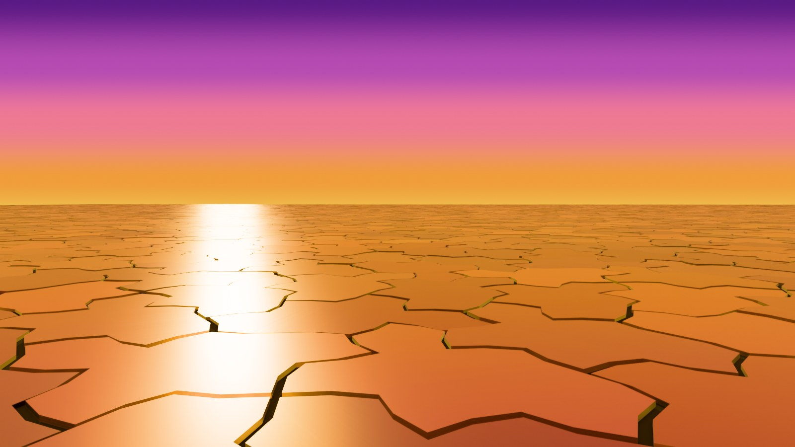

Robotics and mobility
Aperiodic surfaces as navigation substrates: every neighborhood is a unique landmark.
Why aperiodic beats periodic here
No published robotics application uses monotile floors yet; the argument below is a research direction, not a demonstrated product. Regular grids are the worst possible texture for visual localization: every cell looks like every other cell, so a camera looking at a periodic floor learns nothing about where it is. Random textures are locally distinctive but cannot be regenerated or queried. An aperiodic monotile surface is the interesting middle: every neighborhood is provably unique,[2] yet the whole surface is deterministic — a robot that recognizes its local tile configuration can, in principle, look up its exact pose. The tiling is simultaneously the floor and the map.

Algorithmic groundwork exists: exact extraction of finite tessellation structure from observed fragments[25] is precisely the primitive a localization system needs, and computational tiling search shows the machinery scales.[17] Fibonacci-structured tile counts give the hierarchy usable statistical signatures at every scale.[12]
Test surfaces and mechanics
- Repeatable benchmark terrains: deterministic aperiodic ground for SLAM and motion-planning papers, regenerable exactly from a seed by any lab
- Grasping and traction textures with no periodic slip planes
- Tire tread, road surface, and rail-bed studies where periodic patterns excite resonance
- Deployable structures and folding mechanisms; flat-foldability synthesis tools point the way
See also
Algorithms and machine learning
Categories: Research frontiers